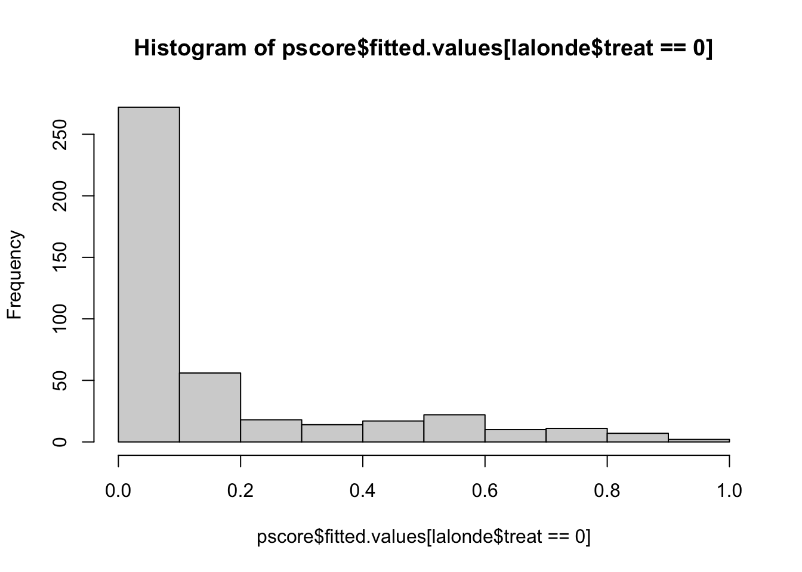

Chapter 5 PSM Matching Strategy
library(Matching)
library(MatchIt)
library(optmatch)
library(weights)
library(cem)
library(tcltk2)
library(knitr)
library(CBPS)
library(jtools)
library(cobalt)
library(lmtest)
library(sandwich) #vcovCL
library(rbounds) #gamma5.1 Data
#data(lalonde)
lalonde = MatchIt::lalonde
dim(lalonde)## [1] 614 9names(lalonde)## [1] "treat" "age" "educ" "race" "married" "nodegree" "re74" "re75"
## [9] "re78"5.2 Regression Estimates
5.2.1 naive t-test estimate
reglm <- lm(re78 ~ treat, data = lalonde)
summ(reglm)## MODEL INFO:
## Observations: 614
## Dependent Variable: re78
## Type: OLS linear regression
##
## MODEL FIT:
## F(1,612) = 0.93, p = 0.33
## R² = 0.00
## Adj. R² = -0.00
##
## Standard errors: OLS
## ----------------------------------------------------
## Est. S.E. t val. p
## ----------------- --------- -------- -------- ------
## (Intercept) 6984.17 360.71 19.36 0.00
## treat -635.03 657.14 -0.97 0.33
## ----------------------------------------------------5.2.2 regression with covariates
reglm1 <- lm(re78 ~ treat + educ + age + black + hispan + married + nodegree + un74 + un75 + re74 + re75, data = lalonde)
summ(reglm1)## MODEL INFO:
## Observations: 614
## Dependent Variable: re78
## Type: OLS linear regression
##
## MODEL FIT:
## F(11,602) = 10.75, p = 0.00
## R² = 0.16
## Adj. R² = 0.15
##
## Standard errors: OLS
## ------------------------------------------------------
## Est. S.E. t val. p
## ----------------- ---------- --------- -------- ------
## (Intercept) 2671.26 2543.96 1.05 0.29
## treat 865.59 800.01 1.08 0.28
## educ 349.38 158.47 2.20 0.03
## age -3.81 32.82 -0.12 0.91
## black -1466.72 768.90 -1.91 0.06
## hispan 471.11 934.51 0.50 0.61
## married 445.25 690.83 0.64 0.52
## nodegree 3.18 845.33 0.00 1.00
## un74 -2492.95 807.49 -3.09 0.00
## un75 -315.32 758.16 -0.42 0.68
## re74 0.38 0.06 6.05 0.00
## re75 0.31 0.12 2.69 0.01
## ------------------------------------------------------5.3 PSM Steps
5.3.1 Selection of covariates in X
fm1 = treat ~ age + educ + black + hispan + married + I(re74/1000) + I(re75/1000)
fm2 = treat ~ age + I(age^2) + I(age^3) + educ + black + hispan + married + I(re74/1000) + I(re75/1000)
fm3 = treat ~ age + I(age^2) + I(age^3) + educ + I(educ^2) + black + hispan + married + I(re74/1000) + I(re75/1000)5.3.2 Calculation of propensity scores (p-scores)
pscore <- glm(fm2, data = lalonde, family = 'binomial')
head(pscore$fitted.values)## NSW1 NSW2 NSW3 NSW4 NSW5 NSW6
## 0.5871794 0.3014102 0.9056376 0.9020139 0.9069395 0.8230760hist(pscore$fitted.values[lalonde$treat==0],xlim=c(0,1))
hist(pscore$fitted.values[lalonde$treat==1],xlim=c(0,1))
lalonde$pscore = pscore$fitted.valuesLogistic regression:
summ(pscore)## MODEL INFO:
## Observations: 614
## Dependent Variable: treat
## Type: Generalized linear model
## Family: binomial
## Link function: logit
##
## MODEL FIT:
## χ²(9) = 310.83, p = 0.00
## Pseudo-R² (Cragg-Uhler) = 0.56
## Pseudo-R² (McFadden) = 0.41
## AIC = 460.66, BIC = 504.86
##
## Standard errors: MLE
## --------------------------------------------------
## Est. S.E. z val. p
## ------------------ -------- ------ -------- ------
## (Intercept) -18.92 4.22 -4.49 0.00
## age 1.51 0.44 3.45 0.00
## I(age^2) -0.04 0.01 -2.73 0.01
## I(age^3) 0.00 0.00 2.01 0.04
## educ -0.04 0.05 -0.76 0.45
## black 3.06 0.30 10.17 0.00
## hispan 0.68 0.45 1.51 0.13
## married -1.34 0.31 -4.27 0.00
## I(re74/1000) -0.10 0.03 -3.11 0.00
## I(re75/1000) 0.04 0.05 0.82 0.41
## --------------------------------------------------try other formulas?
5.3.3 Matching based on p-sores
all in one function matchit():
set.seed(42)
m.out <- matchit(data = lalonde,
formula = fm1,
distance = "logit",
method = "nearest",
replace = TRUE,
caliper = 0.2,
discard = 'both'
)summary of matching results:
summary(m.out)##
## Call:
## matchit(formula = fm1, data = lalonde, method = "nearest", distance = "logit",
## discard = "both", replace = TRUE, caliper = 0.2)
##
## Summary of Balance for All Data:
## Means Treated Means Control Std. Mean Diff. Var. Ratio eCDF Mean eCDF Max
## distance 0.5722 0.1845 1.8020 0.8651 0.3763 0.6428
## age 25.8162 28.0303 -0.3094 0.4400 0.0813 0.1577
## educ 10.3459 10.2354 0.0550 0.4959 0.0347 0.1114
## black 0.8432 0.2028 1.7615 . 0.6404 0.6404
## hispan 0.0595 0.1422 -0.3498 . 0.0827 0.0827
## married 0.1892 0.5128 -0.8263 . 0.3236 0.3236
## I(re74/1000) 2.0956 5.6192 -0.7211 0.5181 0.2248 0.4470
## I(re75/1000) 1.5321 2.4665 -0.2903 0.9563 0.1342 0.2876
##
##
## Summary of Balance for Matched Data:
## Means Treated Means Control Std. Mean Diff. Var. Ratio eCDF Mean eCDF Max
## distance 0.5697 0.5692 0.0021 0.9848 0.0031 0.0546
## age 25.6885 25.5410 0.0206 0.4839 0.0728 0.2404
## educ 10.3224 10.6667 -0.1712 0.4586 0.0406 0.1475
## black 0.8415 0.8361 0.0150 . 0.0055 0.0055
## hispan 0.0601 0.0656 -0.0231 . 0.0055 0.0055
## married 0.1913 0.1858 0.0140 . 0.0055 0.0055
## I(re74/1000) 2.1185 2.3747 -0.0524 1.1054 0.0499 0.2896
## I(re75/1000) 1.5058 1.5431 -0.0116 1.3188 0.0397 0.1967
## Std. Pair Dist.
## distance 0.0112
## age 1.0654
## educ 1.0083
## black 0.0451
## hispan 0.2080
## married 0.3767
## I(re74/1000) 0.5800
## I(re75/1000) 0.7106
##
## Sample Sizes:
## Control Treated
## All 429. 185
## Matched (ESS) 42.44 183
## Matched 77. 183
## Unmatched 278. 0
## Discarded 74. 2- m.out$match.matrix
- m.out$distance
- plot(m.out\(distance, m.out\)fitted.values) # same
- method: exact, subclass, optimal, full, cem
- distance: pscore
- plot(m.out, type = “qq”, interactive=FALSE)
5.3.4 Checking balance on covariates:
5.3.4.2 Balance for formula 2:
set.seed(42)
m.out <- matchit(data = lalonde,
formula = fm2,
distance = "logit",
method = "nearest",
replace = TRUE,
caliper = 0.2,
discard = 'both'
)
plot(summary(m.out))love.plot(m.out, binary = "std")Standardized mean differences (SMD):
summary(m.out)##
## Call:
## matchit(formula = fm2, data = lalonde, method = "nearest", distance = "logit",
## discard = "both", replace = TRUE, caliper = 0.2)
##
## Summary of Balance for All Data:
## Means Treated Means Control Std. Mean Diff. Var. Ratio eCDF Mean eCDF Max
## distance 0.6237 0.1623 1.8005 1.3810 0.4018 0.6783
## age 25.8162 28.0303 -0.3094 0.4400 0.0813 0.1577
## I(age^2) 717.3946 901.7786 -0.4276 0.3627 0.0813 0.1577
## I(age^3) 21554.6595 32892.1142 -0.5408 0.2882 0.0813 0.1577
## educ 10.3459 10.2354 0.0550 0.4959 0.0347 0.1114
## black 0.8432 0.2028 1.7615 . 0.6404 0.6404
## hispan 0.0595 0.1422 -0.3498 . 0.0827 0.0827
## married 0.1892 0.5128 -0.8263 . 0.3236 0.3236
## I(re74/1000) 2.0956 5.6192 -0.7211 0.5181 0.2248 0.4470
## I(re75/1000) 1.5321 2.4665 -0.2903 0.9563 0.1342 0.2876
##
##
## Summary of Balance for Matched Data:
## Means Treated Means Control Std. Mean Diff. Var. Ratio eCDF Mean eCDF Max
## distance 0.5961 0.5956 0.0022 0.9866 0.0027 0.0533
## age 25.5089 25.9763 -0.0653 0.9175 0.0419 0.1361
## I(age^2) 705.0237 733.0651 -0.0650 0.9945 0.0419 0.1361
## I(age^3) 21242.4320 22390.9941 -0.0548 1.0300 0.0419 0.1361
## educ 10.4438 10.1775 0.1324 0.3762 0.0495 0.1834
## black 0.8284 0.8580 -0.0814 . 0.0296 0.0296
## hispan 0.0651 0.0473 0.0751 . 0.0178 0.0178
## married 0.2071 0.2426 -0.0906 . 0.0355 0.0355
## I(re74/1000) 2.2766 2.2802 -0.0007 1.2066 0.0364 0.2722
## I(re75/1000) 1.5084 1.3610 0.0458 1.7749 0.0272 0.1657
## Std. Pair Dist.
## distance 0.0117
## age 1.1503
## I(age^2) 1.0985
## I(age^3) 1.0232
## educ 1.3037
## black 0.1790
## hispan 0.3253
## married 0.6647
## I(re74/1000) 0.7456
## I(re75/1000) 0.6802
##
## Sample Sizes:
## Control Treated
## All 429. 185
## Matched (ESS) 47.21 169
## Matched 78. 169
## Unmatched 229. 0
## Discarded 122. 16#out = summary(m.out)
#round(out$sum.all, 3)
#round(out$sum.matched, 3)plot(m.out, type = "hist", interactive = F)
plot(m.out, type = "jitter", interactive = F)love.plot(m.out, binary = "std")
bal.plot(m.out, var.name = "distance", which = "both",
type = "histogram", mirror = TRUE)who matched to whom?
head(m.out$match.matrix, 10)## [,1]
## NSW1 "PSID15"
## NSW2 "PSID76"
## NSW3 NA
## NSW4 "PSID356"
## NSW5 NA
## NSW6 "PSID269"
## NSW7 "PSID269"
## NSW8 "PSID356"
## NSW9 "PSID253"
## NSW10 "PSID329"5.3.5 Estimation of treatment effect
I will use the matching results with fm3 because it yielded the best balance on the covariates between the matched groups. I also kept ratio = 1 and replace = FALSE to avoid the specification of weights for now:
set.seed(42)
m.out <- matchit(data = lalonde,
formula = fm3,
distance = "logit",
method = "nearest",
replace = FALSE,
ratio = 1,
caliper = 0.2,
discard = 'both'
)
plot(summary(m.out))love.plot(m.out, binary = "std")Extract matched data:
m.data <- match.data(m.out)
# m.data <- get_matches(m.out)Linear model without covariates:
fit1 <- lm(re78 ~ treat, data = m.data)
summ(fit1)## MODEL INFO:
## Observations: 200
## Dependent Variable: re78
## Type: OLS linear regression
##
## MODEL FIT:
## F(1,198) = 0.14, p = 0.71
## R² = 0.00
## Adj. R² = -0.00
##
## Standard errors: OLS
## -----------------------------------------------------
## Est. S.E. t val. p
## ----------------- --------- --------- -------- ------
## (Intercept) 5555.31 744.75 7.46 0.00
## treat 396.36 1053.23 0.38 0.71
## -----------------------------------------------------Cluster-robust standard errors:
coeftest(fit1, vcov. = vcovCL)##
## t test of coefficients:
##
## Estimate Std. Error t value Pr(>|t|)
## (Intercept) 5555.31 641.85 8.6552 1.705e-15 ***
## treat 396.36 1053.23 0.3763 0.7071
## ---
## Signif. codes: 0 '***' 0.001 '**' 0.01 '*' 0.05 '.' 0.1 ' ' 1Linear model with covariates: double robust (use with caution)
fit2 <- lm(re78 ~ treat + age + educ + black + hispan + married + nodegree + un74 + un75 + re74 + re75, data = m.data)
summ(fit2)## MODEL INFO:
## Observations: 200
## Dependent Variable: re78
## Type: OLS linear regression
##
## MODEL FIT:
## F(11,188) = 2.78, p = 0.00
## R² = 0.14
## Adj. R² = 0.09
##
## Standard errors: OLS
## ------------------------------------------------------
## Est. S.E. t val. p
## ----------------- ---------- --------- -------- ------
## (Intercept) 22.70 5049.51 0.00 1.00
## treat -511.77 1076.16 -0.48 0.63
## age 24.94 67.50 0.37 0.71
## educ 524.42 323.09 1.62 0.11
## black -1547.82 1329.82 -1.16 0.25
## hispan 1274.60 2080.07 0.61 0.54
## married -173.99 1327.78 -0.13 0.90
## nodegree 978.45 1550.85 0.63 0.53
## un74 -4299.86 1572.94 -2.73 0.01
## un75 1927.21 1488.42 1.29 0.20
## re74 0.28 0.14 1.99 0.05
## re75 0.34 0.20 1.65 0.10
## ------------------------------------------------------coeftest(fit2, vcov. = vcovCL)##
## t test of coefficients:
##
## Estimate Std. Error t value Pr(>|t|)
## (Intercept) 22.69780 5654.73603 0.0040 0.99680
## treat -511.76505 963.93187 -0.5309 0.59610
## age 24.93687 68.98432 0.3615 0.71814
## educ 524.42185 315.40948 1.6627 0.09804 .
## black -1547.81890 1155.69566 -1.3393 0.18209
## hispan 1274.59576 1950.06532 0.6536 0.51416
## married -173.99139 1146.14452 -0.1518 0.87950
## nodegree 978.44625 1552.75781 0.6301 0.52937
## un74 -4299.85657 1810.33847 -2.3752 0.01855 *
## un75 1927.21482 2178.34831 0.8847 0.37744
## re74 0.27636 0.21661 1.2759 0.20358
## re75 0.33714 0.24975 1.3499 0.17867
## ---
## Signif. codes: 0 '***' 0.001 '**' 0.01 '*' 0.05 '.' 0.1 ' ' 15.3.7 References:
- matchit: https://kosukeimai.github.io/MatchIt/articles/MatchIt.html
- manual: https://imai.fas.harvard.edu/research/files/matchit.pdf
- starting from page 15
- Let’s play with the arguments!